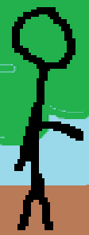
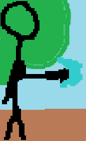
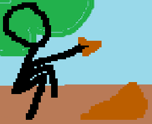
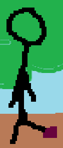
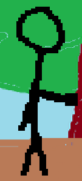
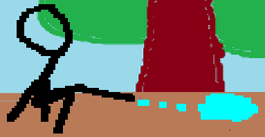
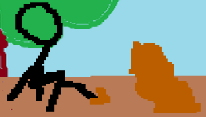
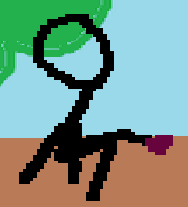

  
Command normals, Typed or not, are what most of the input of a character are and except being generally slower than jabs, they are very diversified and learning what each of your command normals do, is a big part of mastering any character.

They can be canceled by other Typed command normals of the stronger type but you can only use a type once in the same combo or pressure string.
It means that you can cycle the Typed button once you're using Typed command normals; meaning you can do yS -> yM -> yV or yM -> yV -> yS or yV -> yS -> yM (y being any direction that won't result in a jab).
  
After that, the cancel tree isn't influenced by types.


Once the ultimate is used, you lose your overdrive, your passive mana regeneration and your guard bar for the rest of the game, making it only usefull as a game ender most of the time.